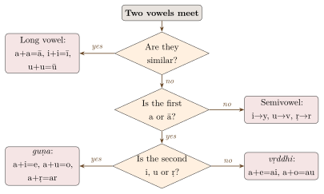
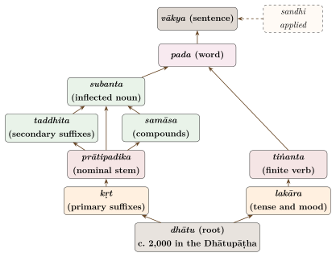

Chapter 6: An Outline of Sanskrit Grammar: Sandhi, Compounds, Case and Verb¶
arthapravṛttitattvānāṃ śabdā eva nibandhanam
tattvāvabodhaḥ śabdānāṃ nāsti vyākaraṇād ṛte
Words alone are the means by which the truth about things and their uses is fixed; and without grammar there is no true understanding of words.
— Bhartṛhari, Vākyapadīya 1.13
6.1 Introduction¶
Chapter 5 described the Aṣṭādhyāyī as a system of rules. This chapter is its companion: a reference outline of the Sanskrit that those rules describe, for readers who want to see the language itself before following the grammarians’ debates in the chapters that come next. It covers the combination of sounds (sandhi), the formation of compounds (samāsa), the case system, the derivation of words by suffixes, and the verb. Pāṇini’s rule numbers are given where they help to show how the traditional grammar treats each topic. For fuller modern accounts, see the standard reference grammars and Cardona (1997); for the Pāṇinian treatment of individual rules, Katre (1987) and Sharma (1987–2003).
6.2 Sandhi¶
Sandhi (“joining”) is the set of sound changes that take place where elements meet: within a word, between the members of a compound, and between words in a sentence. In written Sanskrit external sandhi is normally applied, so that a sentence may appear as one continuous string. This is one reason why reading Sanskrit, and processing it by computer (Chapter 14), requires a sound knowledge of sandhi.
6.2.1 Vowel sandhi¶
The principal rules are set out in Table 6.1; Figure 6.1 arranges them as a sequence of decisions.
| Meeting vowels | Result | Rule and example |
|---|---|---|
| similar vowels (a/ā + a/ā, i/ī + i/ī …) | long vowel | 6.1.101; deva + ālaya \(\rightarrow\) devālaya |
| a/ā + i/ī | e | 6.1.87 (guṇa); deva + indra \(\rightarrow\) devendra |
| a/ā + u/ū | o | 6.1.87; sūrya + udaya \(\rightarrow\) sūryodaya |
| a/ā + ṛ | ar | 6.1.87; mahā + ṛṣi \(\rightarrow\) maharṣi |
| a/ā + e/ai | ai | 6.1.88 (vṛddhi); sadā + eva \(\rightarrow\) sadaiva |
| a/ā + o/au | au | 6.1.88; mahā + oṣadhi \(\rightarrow\) mahauṣadhi |
| i/ī, u/ū, ṛ + dissimilar vowel | y, v, r + vowel | 6.1.77; iti + ādi \(\rightarrow\) ityādi |
| word-final e, o + a | e, o; a elided | 6.1.109; vane + atra \(\rightarrow\) vane ’tra |

6.2.2 Consonant sandhi¶
Table 6.2 gives some of the commonest rules for consonants.
| Process | Description | Example |
|---|---|---|
| Voicing | A word-final stop becomes voiced before a voiced sound | vāk + devī \(\rightarrow\) vāgdevī |
| Palatal assimilation | Final t becomes c or j before palatals | tat + ca \(\rightarrow\) tac ca; tat + jayati \(\rightarrow\) taj jayati |
| Nasal assimilation | A final stop may become the nasal of its class before a nasal | tat + na \(\rightarrow\) tan na; jagat + nātha \(\rightarrow\) jagannātha |
| Sibilant after a stop | After a stop, initial ś may become ch | tat + śrutvā \(\rightarrow\) tac chrutvā |
| Anusvāra | Final m becomes anusvāra before a consonant | tam + karoti \(\rightarrow\) taṃ karoti |
| Retroflexion of n | n becomes ṇ after r, ṛ, ṣ within a word, if nothing but vowels, gutturals, labials, h, y, v or anusvāra intervene | rāmeṇa, karaṇa (8.4.1–2) |
| Retroflexion of s | s becomes ṣ after i, u, ṛ, e, o, k, r | agni + su \(\rightarrow\) agniṣu (8.3.59) |
6.2.3 Sandhi of visarga¶
The visarga (-ḥ) changes according to the sound that follows (Table 6.3).
| Before | Change | Example |
|---|---|---|
| c, ch | ḥ \(\rightarrow\) ś | rāmaḥ + ca \(\rightarrow\) rāmaś ca |
| ṭ, ṭh | ḥ \(\rightarrow\) ṣ | rāmaḥ + ṭīkām \(\rightarrow\) rāmaṣ ṭīkām |
| t, th | ḥ \(\rightarrow\) s | rāmaḥ + tatra \(\rightarrow\) rāmas tatra |
| k, kh, p, ph, sibilants | ḥ remains | rāmaḥ karoti |
| voiced consonant (after a) | -aḥ \(\rightarrow\) -o | rāmaḥ + gacchati \(\rightarrow\) rāmo gacchati |
| a (after a) | -aḥ \(\rightarrow\) -o, a elided | rāmaḥ + atra \(\rightarrow\) rāmo ’tra |
| other vowels (after a) | -aḥ \(\rightarrow\) -a | rāmaḥ + iti \(\rightarrow\) rāma iti |
| voiced sound (after i, u etc.) | ḥ \(\rightarrow\) r | muniḥ + gacchati \(\rightarrow\) munir gacchati |
6.3 Compounds (samāsa)¶
Sanskrit forms compounds very freely: two or more stems are joined, and only the last carries a case ending. Pāṇini treats compounds in Adhyāya 2.1–2.2; the tradition distinguishes four main types (Table 6.4).
| Type | Character | Example |
|---|---|---|
| avyayībhāva | Adverbial; first member usually an indeclinable | yathāśakti “according to one’s ability” |
| tatpuruṣa | Determinative; the last member is qualified by the first | rājapuruṣa “the king’s man” |
| dvandva | Copulative; members coordinated | rāmalakṣmaṇau “Rāma and Lakṣmaṇa” |
| bahuvrīhi | Possessive; the compound describes something outside itself | pītāmbara “(one) whose garment is yellow”, i.e. Kṛṣṇa |
The name bahuvrīhi is itself an example: “(one) who has much rice”, i.e. a wealthy man. The same two words can form compounds of different types with different meanings: nīlotpala as a tatpuruṣa (more precisely a karmadhāraya) means “blue lotus”; as a bahuvrīhi it would mean “(a pond) that has blue lotuses”. In the Vedic language the accent distinguished such pairs, as the story of indraśatru shows (Chapter 2).
6.3.1 Kinds of tatpuruṣa¶
Tatpuruṣa compounds are named after the case relation of the first member to the second (Table 6.5).
| Relation | Example |
|---|---|
| accusative | kṛṣṇaśrita “resorting to Kṛṣṇa” |
| instrumental | śaṅkulākhaṇḍa “cut with a knife” |
| dative | yūpadāru “wood for a sacrificial post” |
| ablative | corabhaya “fear of thieves” |
| genitive | rājapuruṣa “king’s man” |
| locative | akṣaśauṇḍa “skilled at dice” |
- Karmadhāraya
- a tatpuruṣa whose members refer to the same thing: nīlotpala “blue lotus”, mahārāja “great king”.
- Dvigu
- a karmadhāraya whose first member is a numeral: triloka or trilokī “the three worlds”, pañcavaṭī “(the place of) five banyan trees”.
- Nañ-tatpuruṣa
- a compound with the negative prefix a(n)-: abrāhmaṇa “non-Brahmin”, adharma.
- Upapada
- a compound whose second member is a verbal derivative that occurs only in composition: kumbhakāra “potter”, literally “pot-maker”.
- Aluk
- a compound in which the first member keeps its case ending: parasmaipada (“word for another”), with the dative parasmai.
Pāṇini also lists irregular compounds in a group beginning with mayūravyaṃsaka (2.1.72), which are accepted as they occur in usage.
6.3.2 Long compounds¶
Classical prose, above all the novels of Bāṇa (7th century) and Subandhu, and much technical and philosophical writing, uses compounds of great length. They must be analysed layer by layer. An illustrative example: nīlotpaladalaśyāmā is a bahuvrīhi, “(a woman) dark like the petal of a blue lotus”. Within it, nīlotpala (“blue lotus”) is a karmadhāraya; nīlotpaladala (“petal of a blue lotus”) a genitive tatpuruṣa; nīlotpaladalaśyāma (“dark as a blue lotus petal”) a compound of comparison.
6.4 The Case System¶
Sanskrit nouns have seven cases (vibhakti) in three numbers (singular, dual and plural). The vocative (sambodhana, “address”) is not a separate case in Pāṇini’s system but a use of the nominative (2.3.47–49); the special vocative singular form is called sambuddhi. Modern grammars usually list it as an eighth case (Tables 6.6, 6.7 and 6.8).
| No. | Name | Modern term | Principal uses |
|---|---|---|---|
| 1 | prathamā | nominative | The bare meaning of the stem; the agent of an active verb, the object of a passive one |
| 2 | dvitīyā | accusative | The object (karman); goal of motion; duration |
| 3 | tṛtīyā | instrumental | Instrument (karaṇa); agent of a passive verb; accompaniment |
| 4 | caturthī | dative | Recipient (sampradāna); purpose |
| 5 | pañcamī | ablative | Point of departure (apādāna); cause; comparison |
| 6 | ṣaṣṭhī | genitive | “Other” relations, such as possession (not a kāraka) |
| 7 | saptamī | locative | Locus (adhikaraṇa) in space or time; the “locative absolute” |
| – | sambodhana | vocative | Address; a use of the nominative |
| Case | Singular | Dual | Plural |
|---|---|---|---|
| Nominative | devaḥ | devau | devāḥ |
| Accusative | devam | devau | devān |
| Instrumental | devena | devābhyām | devaiḥ |
| Dative | devāya | devābhyām | devebhyaḥ |
| Ablative | devāt | devābhyām | devebhyaḥ |
| Genitive | devasya | devayoḥ | devānām |
| Locative | deve | devayoḥ | deveṣu |
| Vocative | deva | devau | devāḥ |
| Case | Singular | Dual | Plural |
|---|---|---|---|
| Nominative | latā | late | latāḥ |
| Accusative | latām | late | latāḥ |
| Instrumental | latayā | latābhyām | latābhiḥ |
| Dative | latāyai | latābhyām | latābhyaḥ |
| Ablative | latāyāḥ | latābhyām | latābhyaḥ |
| Genitive | latāyāḥ | latayoḥ | latānām |
| Locative | latāyām | latayoḥ | latāsu |
| Vocative | late | late | latāḥ |
Sanskrit has many more declension classes, distinguished by the final sound of the stem and by gender: stems in -i and -u, in -ī and -ū, in -ṛ (such as pitṛ “father” and mātṛ “mother”), and a variety of consonant stems, some of which change their form between “strong” and “weak” cases (rājā, rājānam, but rājñā, rājñaḥ). Pāṇini handles this variety with a single set of basic endings (sup) added to all stems, and a large number of rules that modify stems and endings in particular environments. Two further paradigms, a vowel stem in -i and a consonant stem in -an, are given in Table 6.9; the alternation of strong and weak stems in rājan is a feature that Sanskrit inherited from Indo-European. The kāraka system that underlies the assignment of all these cases is described in Chapter 5.
| agni | rājan | |||||
| Case | Sg. | Du. | Pl. | Sg. | Du. | Pl. |
| Nom. | agniḥ | agnī | agnayaḥ | rājā | rājānau | rājānaḥ |
| Acc. | agnim | agnī | agnīn | rājānam | rājānau | rājñaḥ |
| Ins. | agninā | agnibhyām | agnibhiḥ | rājñā | rājabhyām | rājabhiḥ |
| Dat. | agnaye | agnibhyām | agnibhyaḥ | rājñe | rājabhyām | rājabhyaḥ |
| Abl. | agneḥ | agnibhyām | agnibhyaḥ | rājñaḥ | rājabhyām | rājabhyaḥ |
| Gen. | agneḥ | agnyoḥ | agnīnām | rājñaḥ | rājñoḥ | rājñām |
| Loc. | agnau | agnyoḥ | agniṣu | rājñi, rājani | rājñoḥ | rājasu |
| Voc. | agne | agnī | agnayaḥ | rājan | rājānau | rājānaḥ |
6.4.1 Pronouns¶
The pronouns have partly separate endings of their own. The demonstrative tad “that, he” has the dative, ablative and locative singular tasmai, tasmāt and tasmin, with an element -sm- that does not appear in the nouns, and the nominative plural te instead of -āḥ. (In Pali these pronominal endings spread to the nouns: Chapter 9.) The personal pronouns of the first and second persons have no gender, are built on different stems in the singular and plural, and have short unaccented forms (me, te, naḥ, vaḥ) that cannot begin a sentence (Table 6.10).
| Case | I | we | you (sg.) | you (pl.) | he | they |
|---|---|---|---|---|---|---|
| Nom. | aham | vayam | tvam | yūyam | saḥ | te |
| Acc. | mām | asmān | tvām | yuṣmān | tam | tān |
| Ins. | mayā | asmābhiḥ | tvayā | yuṣmābhiḥ | tena | taiḥ |
| Dat. | mahyam | asmabhyam | tubhyam | yuṣmabhyam | tasmai | tebhyaḥ |
| Abl. | mat | asmat | tvat | yuṣmat | tasmāt | tebhyaḥ |
| Gen. | mama | asmākam | tava | yuṣmākam | tasya | teṣām |
| Loc. | mayi | asmāsu | tvayi | yuṣmāsu | tasmin | teṣu |
6.5 Primary Derivatives (kṛt)¶
Suffixes added directly to roots form nouns, adjectives, participles, infinitives and absolutives. Pāṇini’s names for them include marker letters, which are shown in the second column (Table 6.11).
| Suffix | Pāṇini’s name | Function | Example |
|---|---|---|---|
| -ta | kta | past passive participle | kṛta “done”, gata “gone” |
| -tavat | ktavatu | past active participle | gatavat “having gone” |
| -at/-ant | śatṛ | present active participle | pacat “cooking” |
| -māna/-āna | śānac | present middle participle | pacamāna “cooking (for oneself)” |
| -tṛ | tṛc | agent noun | kartṛ “doer” |
| -aka | ṇvul | agent noun | pācaka “cook” |
| -ana | lyuṭ | action or instrument noun | karaṇa “doing, instrument” |
| -tum | tumun | infinitive | gantum “to go” |
| -tvā, -ya | ktvā, lyap | absolutive | kṛtvā “having done”; prakṛtya (with a preverb) |
| -tavya, -anīya, -ya | tavyat, anīyar, ṇyat | gerundives | kartavya, karaṇīya, kārya “to be done” |
6.6 Secondary Derivatives (taddhita)¶
Secondary suffixes are added to nominal stems. Pāṇini treats them in Adhyāyas 4 and 5 (Table 6.12).
| Meaning | Suffix | Example |
|---|---|---|
| Patronymic | -i (iñ), -a with vṛddhi (aṇ), -ya (yañ) | dāśarathi “son of Daśaratha”; vāsudeva “son of Vasudeva”; gārgya “descendant of Garga” |
| Relation | -ika (ṭhak etc.), -īya (cha) | vaidika “Vedic”, dhārmika “righteous”, pāṇinīya “Pāṇinian” |
| Abstract nouns | -tva, -tā | manuṣyatva “humanity”, sundaratā “beauty” |
| Possession | -mat/-vat, -in | dhanavat “wealthy”, yogin |
| Material | -maya | suvarṇamaya “golden” |
| Time | -ika | dainika “daily”, māsika “monthly” |
| Place adverbs | -tra, -tas | tatra “there”, yatra “where”, tatas “from there” |
| Diminutive | -ka | putraka “little son” |
Primary and secondary derivation, together with compounding, make the Sanskrit vocabulary highly productive and transparent: from the root kṛ “do, make” come kartṛ “doer”, karaṇa “instrument”, karman “action”, kārya “what is to be done”, kṛti “a work”, and with preverbs prakṛti “nature, base”, vikṛti “modification”, saṃskāra “refinement”, ākṛti “form”. This productivity is why Sanskrit has been a source of technical vocabulary for many Indian languages, including the coinages of modern Hindi, Bengali, Marathi, Telugu and Kannada.
6.7 The Verb¶
6.7.1 Tenses and moods (lakāra)¶
Pāṇini designates the tenses and moods by ten abstract elements, all beginning with l (hence lakāra), which are later replaced by the personal endings. The optative liṅ has two forms, the ordinary optative and the benedictive (Tables 6.13 and 6.14).
| Lakāra | Modern term | Pāṇini’s characterisation | Form |
|---|---|---|---|
| laṭ | present | present time (3.2.123) | bhavati |
| liṭ | perfect | past, not witnessed by the speaker (parokṣa) | babhūva |
| luṭ | periphrastic future | future, not of today | bhavitā |
| lṛṭ | simple future | future | bhaviṣyati |
| leṭ | subjunctive | Vedic only | bhavāti |
| loṭ | imperative | command, request | bhavatu |
| laṅ | imperfect | past, not of today | abhavat |
| liṅ (vidhi) | optative | injunction, possibility | bhavet |
| liṅ (āśīḥ) | benedictive | blessing | bhūyāt |
| luṅ | aorist | past in general | abhūt |
| lṛṅ | conditional | unrealised condition | abhaviṣyat |
| Active (parasmaipada) | Middle (ātmanepada) | |||||
| Person | Sg. | Du. | Pl. | Sg. | Du. | Pl. |
| 3rd | bhavati | bhavataḥ | bhavanti | edhate | edhete | edhante |
| 2nd | bhavasi | bhavathaḥ | bhavatha | edhase | edhethe | edhadhve |
| 1st | bhavāmi | bhavāvaḥ | bhavāmaḥ | edhe | edhāvahe | edhāmahe |
The Indian grammarians list the persons in the order third, second, first (prathama, madhyama, uttama puruṣa), as in the table; European grammars reverse the order. Table 6.15 gives the other common active forms of the same root.
| Imperfect (laṅ) | Optative (liṅ) | Imperative (loṭ) | Perfect (liṭ) | Future (lṛṭ) | |
|---|---|---|---|---|---|
| 3rd sg. | abhavat | bhavet | bhavatu | babhūva | bhaviṣyati |
| 3rd du. | abhavatām | bhavetām | bhavatām | babhūvatuḥ | bhaviṣyataḥ |
| 3rd pl. | abhavan | bhaveyuḥ | bhavantu | babhūvuḥ | bhaviṣyanti |
| 2nd sg. | abhavaḥ | bhaveḥ | bhava | babhūvitha | bhaviṣyasi |
| 2nd du. | abhavatam | bhavetam | bhavatam | babhūvathuḥ | bhaviṣyathaḥ |
| 2nd pl. | abhavata | bhaveta | bhavata | babhūva | bhaviṣyatha |
| 1st sg. | abhavam | bhaveyam | bhavāni | babhūva | bhaviṣyāmi |
| 1st du. | abhavāva | bhaveva | bhavāva | babhūviva | bhaviṣyāvaḥ |
| 1st pl. | abhavāma | bhavema | bhavāma | babhūvima | bhaviṣyāmaḥ |
Table 6.15 shows several characteristic devices of the Sanskrit verb: the augment a- that marks the imperfect (and the aorist and conditional) as past; the optative element -e- (historically -ai-, from -a- + -ī-); the reduplication of the root in the perfect (ba-bhūva); and the future suffix -sya-, here -iṣya-.
In classical Sanskrit the distinctions between the three past tenses were largely lost, and the past passive participle increasingly took over their functions, a development continued in the modern Indo-Aryan languages.
6.7.2 Active and middle (parasmaipada, ātmanepada)¶
Verbs take one of two sets of endings: parasmaipada (“word for another”) and ātmanepada (“word for oneself”). Some roots take only one set, others both (ubhayapada). For roots that take both, the traditional rule is that the middle endings are used when the fruit of the action accrues to the agent (yajate “he sacrifices for himself”) and the active endings otherwise (yajati “he sacrifices (for another)”), though in classical usage the distinction is often not observed. The passive is formed with the middle endings and the suffix -ya- (kriyate “is done”), introduced by rule 3.1.67 (sārvadhātuke yak).
6.7.3 Derivative verbs¶
Besides the simple root, Sanskrit forms several kinds of derivative verb stems, which Pāṇini introduces at the beginning of Adhyāya 3 and then treats as roots in their own right (3.1.32 sanādyantā dhātavaḥ):
- Causative
- with the suffix ṇic (3.1.26), for an action that the subject causes another to perform: bhāvayati “causes to be”, kārayati “causes to do, has made”, pācayati “has (someone) cook”.
- Desiderative
- with the suffix san and reduplication (3.1.7), for an action that the subject wishes to perform: bubhūṣati “wishes to be”, jigamiṣati “wishes to go”, pipāsati “wishes to drink, is thirsty”.
- Intensive
- with the suffix yaṅ and a strengthened reduplication (3.1.22), for an action repeated or done intensely: bobhūyate, jaṅgamyate “goes to and fro”.
- Denominative
- formed from nouns, for example with kyac (3.1.8) in the sense of wishing for something for oneself: putrīyati “wishes for a son”.
The causative is by far the most common of these in the classical language, and the desiderative supplies many ordinary nouns and adjectives (pipāsā “thirst”, jijñāsā “desire to know, inquiry”, mumukṣu “one who desires liberation”). The last two words show how the grammatical categories entered the vocabulary of philosophy: the Brahmasūtra opens with athāto brahmajijñāsā, “now, therefore, the desire to know brahman”.
6.7.4 Vowel gradation¶
Many Sanskrit forms alternate between three grades of a vowel: the basic grade, guṇa and vṛddhi (Table 6.16).
| Basic grade | guṇa | vṛddhi |
|---|---|---|
| i, ī | e | ai |
| u, ū | o | au |
| ṛ, ṝ | ar | ār |
| ḷ | al | āl |
| a | a | ā |
Pāṇini’s first two rules define vṛddhi and guṇa (1.1.1–2). The alternations they describe are of Indo-European origin, and the terms guṇa and vṛddhi were adopted by 19th-century European comparative philologists in describing the vowel gradation (ablaut) of other Indo-European languages (Chapter 14).
6.8 Vedic and Classical Sanskrit¶
Pāṇini described both the Vedic language (chandas) and the spoken Sanskrit (bhāṣā) of his day, and the differences between them are considerable. The Vedic language has a richer verbal system, including a subjunctive (leṭ) and an injunctive, and a dozen or more infinitive forms (such as -tave, -dhyai, -tos), where Classical Sanskrit has only -tum. Vedic nouns show more varied endings (for example the nominative plural devāsaḥ beside devāḥ, and the instrumental plural devebhiḥ beside devaiḥ). Preverbs may stand apart from their verbs (tmesis). Above all, Vedic has a pitch accent, which Pāṇini describes in detail and which was lost in Classical Sanskrit.
The Classical language that Pāṇini’s grammar fixed was used for over two thousand years with remarkably little change in its morphology. Its vocabulary, style and syntax, however, did change: later prose favours long compounds and nominal constructions, the past passive participle displaces the finite past tenses, and many words acquire new meanings or are borrowed from the Prakrits, the Dravidian languages and Persian. The grammar’s rules ensured the stability of forms; usage continued to evolve within them.
6.9 A Sentence Analysed¶
The pieces described in this chapter come together in the simplest sentence. Consider:
devadattaḥ kuṭhāreṇa vṛkṣaṃ chinatti
“Devadatta cuts the tree with an axe.”
-
chinatti is the third person singular active present of the root chid “cut”, a root of the seventh class, which inserts a nasal into the root to form its present stem (chi-na-t-ti). The active ending expresses the agent (kartṛ).
-
Because the agent is already expressed by the verb ending, the word for the agent, devadatta, takes only the nominative, which expresses “the bare meaning of the stem” (2.3.46).
-
vṛkṣam “tree” is the object (karman), what the agent most wishes to reach by the action (1.4.49), and takes the accusative (2.3.2).
-
kuṭhāreṇa “with an axe” is the instrument (karaṇa), the most effective means (1.4.42), and takes the instrumental (2.3.18); its ṇ results from the retroflexion rule after r.
-
Final -m before a consonant becomes anusvāra: vṛkṣaṃ chinatti.
In the passive the same participants are presented differently: devadattena kuṭhāreṇa vṛkṣaś chidyate “the tree is cut by Devadatta with an axe”. Now the verb (chid + passive -ya- + middle ending) expresses the object, so vṛkṣa stands in the nominative and the agent devadatta in the instrumental; the visarga of vṛkṣaḥ becomes ś before ch. Because case endings, not position, mark the relations, the words of either sentence may be rearranged for emphasis or metre without changing who does what to whom. This is the sense in which Sanskrit word order is “free”, though prose has a normal order (agent, object, verb) and departures from it are marked.
6.10 The Architecture of the System¶
Figure 6.2 brings together the stages by which the Pāṇinian system builds words and sentences.

The kāraka analysis used in this chapter has also been applied directly in the computational analysis of Sanskrit and Hindi, notably in the “Paninian Grammar Framework” of Akshar Bharati, Vineet Chaitanya and Rajeev Sangal (Bharati et al. 1995); its modern comparisons and limits are discussed in Section 5.7 and Chapter 14.
Further Reading¶
-
Cardona, George. 1997. Pāṇini: His Work and Its Traditions. 2nd ed. 1: Background and Introduction. Motilal Banarsidass.. — On the Pāṇinian analysis of Sanskrit.
-
Katre, Sumitra M. 1987. Aṣṭādhyāyī of Pāṇini. University of Texas Press.. — For the rules cited in this chapter.
-
Bharati, Akshar, Vineet Chaitanya, and Rajeev Sangal. 1995. Natural Language Processing: A Paninian Perspective. Prentice-Hall of India.. — On kāraka-based analysis in computational linguistics.